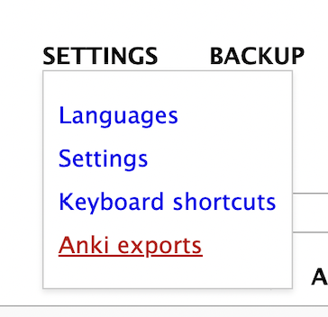
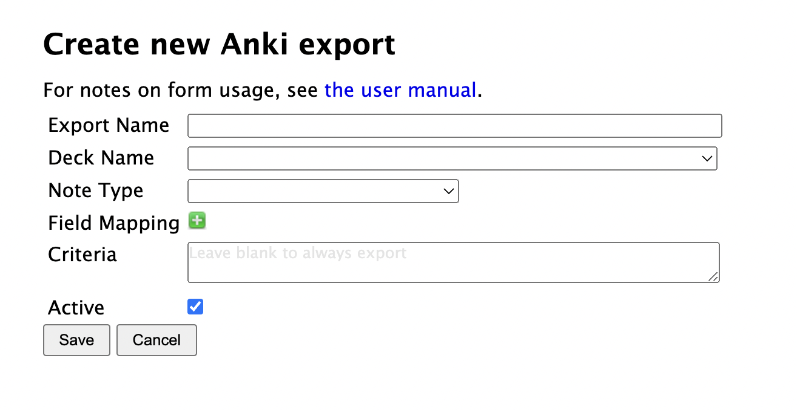
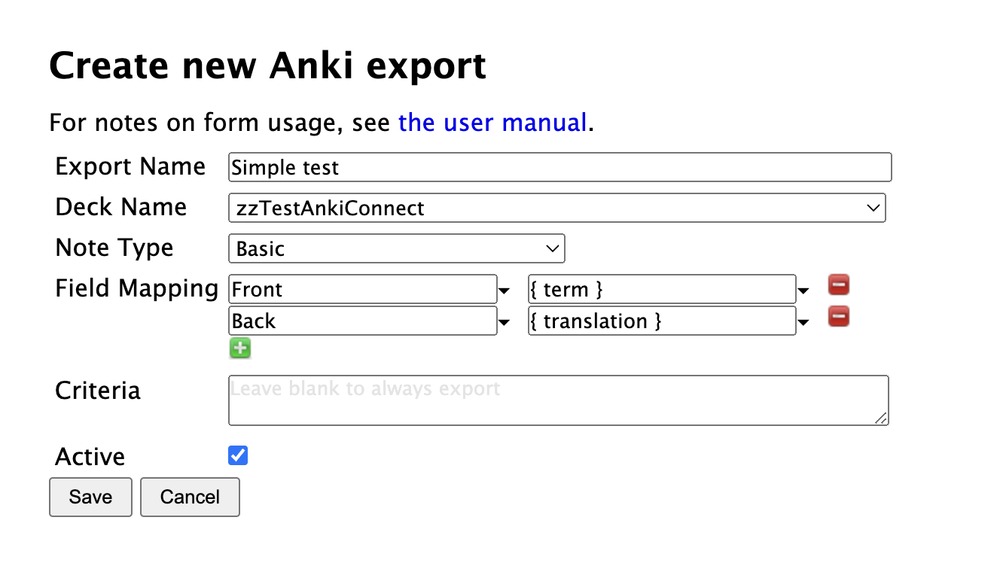

Defining exports
Anki exports are still in alpha/beta, as is this documentation.
The current beta release for Anki exports is 3.10.0b5 - double-check pypi for the latest.
Once Anki and AnkiConnect are setup, and the connection verified, you can create export specifications from Settings > Anki exports:
Then click the "Create new export specification" at the bottom of the listing.
| Field | Notes |
|---|---|
| Export name | Whatever you want to call this export |
| Deck Name | The target deck where new notes will be added. You need to create the deck first. |
| Note Type | The Anki "note type" that terms will be exported to. The note type must already exist in Anki. You can use Anki's built-in note types or create your own. When you select the Note Type, all of the fields on the note are added to the Field Mapping, with blank values. |
| Field Mapping | How to map data from Lute to the Anki note. See Field mappings |
| Criteria | (Optional) Criteria that a Lute term must satisfy for it to be exported. See Criteria |
| Active? | True if this export should be used. |
The simplest export possible
The simplest export would be one to any deck, using the Basic card, with some simple mappings and no criteria:
Suggestions
Exports can take some time and thought to define! Some suggestions from my experience:
- when you're first testing exports, perhaps create a deck like "testing_exports", and use that as the destination deck in your exports. You can delete the cards in this test deck as go, until you have the mappings you want.
- you might want to create separate "Lute decks" for your exports, to keep Lute export data separate from your other data.